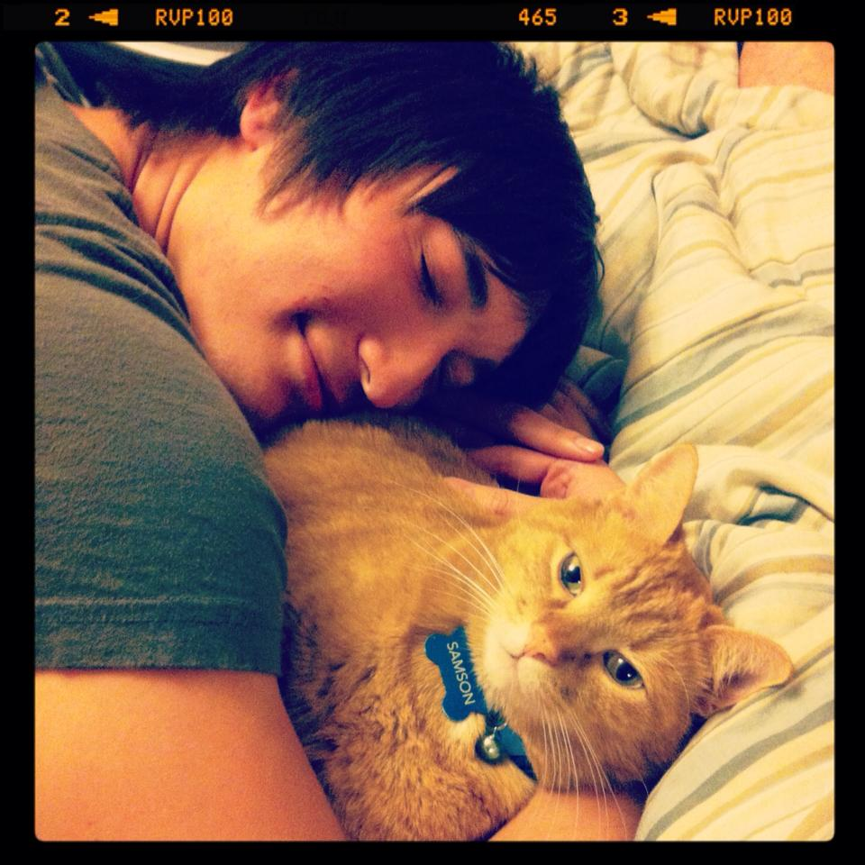

Git and Github
The Version Control Cushion
Feb 7, 2015

My cat and I usually get along fabulously. But when it gets cold and Samson spots the alluring warmth of my laptop, he will gracefully disregard the possibility that I may be writing an important essay. On one occasion, by a grand convergence of unlikely keystroke combinations, he selected the whole masterpiece, replaced it with the letters "fdvfxv," and saved the document. My seven hour investment was sorely lost. How could I have prevented this?
My cat and I, when on good terms.
Other than retroactively casting Samson into oblivion, I could have used version control software. Git is an example of this. It remembers every saved, i.e. "committed," version of a file, allowing the user to return to a previously saved iteration of the file in case something goes awry. Hence, I would've been able to recover my 2000 word essay as it was before being replaced by my cat's nonsense. It has other uses as well, such as allowing the user to create multiple divergent branches of their project.
Github is another tool that has captivated the hearts of programmers. Github is a website that connects projects together, allowing multiple people to clone files, make changes, and add their changes concurrently! It makes programming a much more collaborative endeavor. It can also serve as a portfolio, showcasing one's achievements and contributions. Overall, it's like LinkedIn for programmers!